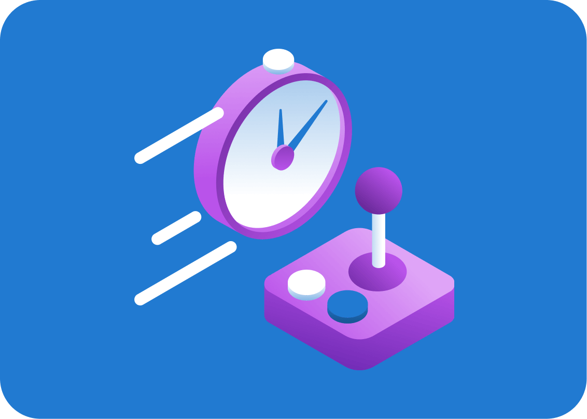
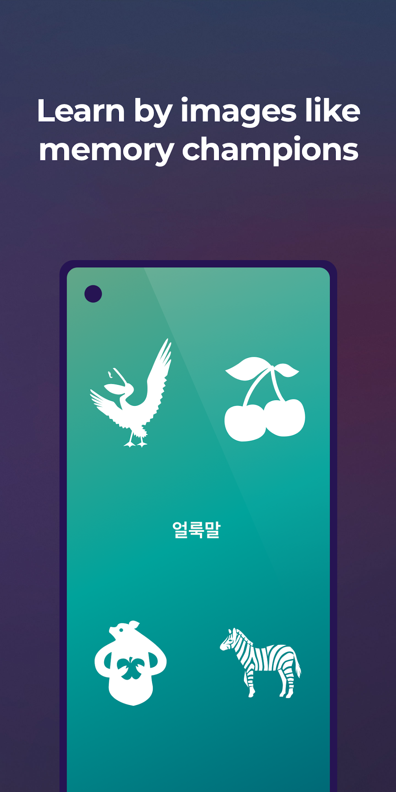

Drophs vs. 同行：为什么这款 5 分钟词汇 App 值得单独说
语言学习类工具已经挤爆赛道，从大厂免费方案到小众精品都在抢用户。Drops 凭什么能在 2026 年还让人愿意单独写一篇对比？
语言学习这个类目里，大家已经被喂得很饱了。大厂有免费方案，社区有开源路线，还有各种细分到某个语言的垂直 App。在这样一个品类里，单独拎一个工具出来写对比评测，本身就是个需要理由的决定。
我试过很多同类工具，从系统自带的那些到主打 AI 对话的新锐应用，也用过几个只做日语或西班牙语的精品。Drops官网的定位比较特殊——它不是最便宜的，不是功能最全的，但它在自己选的赛道上做到了「每一刀都准」。如果你已经在这个类目里逛了一圈还没找到长期坚持的，这篇可以帮你快速判断：它是不是你的那个答案。
它到底在跟谁竞争
先给这个类目画一张草图：同类工具大致分四档。最上面是那些覆盖面极广的大厂方案，免费、功能全，但每个功能都只做到及格线，词汇、语法、听说都有但都不精；第二档是「功能型选手」，主打某个特定技能（比如纯听力、纯语法），在那个点上做得很深但广度有限；第三档是 AI 驱动的新锐，把对话和实时反馈作为卖点，适合有一定基础的人练输出；第四档就是 Drops 所在的位置——专注词汇输入、用游戏化交互把「每天坚持」这件事做到极致。
注意，这里的「竞争」不是指 Drops 要打败其他三档，而是说它在一个非常具体的定位上做到了头：用最短的时间、最低的心理门槛、最高的留存率帮你把一个主题的词汇真的记住，而不是假装学了。
三个它做得比同行明显好的点
5 分钟会话机制：反人性的反直觉设计
这可能是 Drops 最被低估的一个设计。几乎所有同类工具都在试图给你「更多」——更长的课程、更完整的路径、更深的内容。Drops 反其道而行之：每个学习会话严格限制在 5 分钟，到点自动结束。
我一开始以为这是个噱头，用过两周才明白它的厉害。首先，它把「开始学习」这件事的心理门槛降到了几乎为零——5 分钟嘛，谁都能挤出来。其次，强制的时间上限反而让每一次会话的节奏特别紧凑，没有任何注水的空间。最后，它和连胜机制形成了正反馈：每天 5 分钟不难，连签 30 天就很有成就感，而如果你想多学，完全可以连续开几个会话，系统不会拦你。
对比之下，大厂方案的课程往往是 15~30 分钟，对于碎片时间学习者来说太长了；纯语法类工具虽然深，但每天打开的意愿会越来越低。Drops 把「短、轻、频」三个字做到了极致。

视觉联想 + 滑动交互：把单词和画面焊在一起
很多词汇类工具用卡片反复刷，本质上还是机械记忆。Drops 的做法是给每个单词配一张极简的矢量插图，然后用滑动游戏的方式让你把图和词对应起来。这个设计看起来简单，但有两个同行没做到的地方：
第一，插图风格高度统一，是那种扁平矢量风，色彩明快但不花哨——不是随便搜一张网图就贴上去，而是整套视觉语言一致。这种一致性让大脑更容易建立联想，而不是每次都在重新适应画面风格。
第二，交互不是单一的「看图选词」，而是混合了滑动、拖拽、辨音三种玩法的循环。同一组单词在不同玩法里反复出现，但每次的思考路径不一样，相当于从多个角度给同一个词汇打孔，记忆深度自然上去了。
样本里提到的 Quiz Mode 就是这种混合玩法的延伸——不再是单图对单词，而是听力、阅读、辨义的组合题，成绩还能按「词汇量」和「概念掌握」两个维度拆开看。这个细节说明了 Drops 的产品逻辑：它不是把「学完」当作终点，而是把「测得准」也纳入了体验闭环。
同步多人对战：语言学习里第一个真·实时竞技
这是 2024 年底上线的功能，也是我觉得 Drops 和同类拉开差距的一个杀手锏，后来去Drops文档翻了一下才确认它是语言学习里第一个真·同步多人对战。语言学习类工具不是没有社交功能，但大多是异步的——排行榜、打卡群、好友进度对比。同步多人对战意味着：你和最多 6 个真人在同一个房间里同屏竞答，实时看谁先答完、谁答得准。
为什么这件事重要？因为「限时答题迫使你把提取速度练出来」——而提取速度恰恰是日常对话最需要的能力。我自己的体会是，平时单人练习时一个单词可能要两秒才反应过来，但在对战里因为有时间压力，大脑被迫把提取路径缩短到半秒以内。这种「被逼着快」的感觉，是单人模式永远练不出来的。
而且这个功能是免费开放给所有用户的，Premium 的优势只是自建房时能选更多主题。对于想偶尔来点刺激的学习者来说，这是一个不花钱就能体验到的「加餐」。
它为这些优势付出了什么
好东西不便宜，Drops 也有明显的取舍，这些是你在选它之前必须想清楚的。
第一，深度让位于广度。 Drops 主打的是词汇输入，语法和书写练习被拆到了姊妹应用 Scripts 和写字描红里。这种拆分的好处是每个应用都保持了专注，但代价是如果你想系统学语法，还得额外装另一个应用。对比之下，大厂方案往往一个应用包打天下，虽然每个模块都不精，但不用在不同应用之间切换。
第二，5 分钟机制的副作用是「学完感」。 每天 5 分钟确实容易坚持，但也容易让人产生「今天已经学过了」的错觉，然后就不主动去复习了。Drops 的复习系统（Review Dojo）做得不差，但它终究是被动触发的——算法决定什么时候给你推复习，而不是让你主动安排。对于学习习惯成熟的人来说，这可能不够。
第三，Premium 订阅的定价在同类里不算便宜。 安装包从官方下载拿，装好后有 7 天免费试用，恢复购买的流程也很清晰（换机时只要用同一个商店账号登录、在应用里点恢复购买就行），但如果你只打算学一个语言、每天只用免费版的配额，那 Premium 的吸引力就不大。免费版能做什么？样本里提到免费版有每日会话配额，基础功能都能用，只是深度和灵活性受限。

选购结论：谁该选它，谁该看看别的
说了这么多，给一个明确的判断：
选 Drops，如果你是这些人： 每天能挤 5~15 分钟碎片时间、想同时学不止一门语言（它支持 55+ 种，包括一些濒危语言和 2025 年新增的六种）、喜欢游戏化交互且需要外部激励（四套激励体系——连胜、徽章、天梯、对战榜——总有一套能戳中你）、已经试过其他工具但因为「门槛太高没坚持下来」。
选别的，如果你是这些人： 预算极其紧张（Drops 免费版够用但配额有限）、需要系统的语法学习且不想装多个应用、已经有明确的学习路径（比如备考某个考试，有专门的题库和大纲）、不喜欢游戏化更偏好严肃学习。
最后补一句我的真实感受：在语言学习这个赛道里，「坚持」比「完美」重要一万倍。Drops 不是那个最完美的工具，但它可能是那个让你真的能坚持下去的工具。这就是我单独写它的原因。
完整的中文使用指南在 Drops 文档里，从零到进阶的每一个功能点都拆成了短文，适合边用边查。换机时记得用同一个商店账号做恢复购买，付费权益和学习进度都能找回。
多说一句，这套资料我在三个代码仓库都做了备份，GitHub、Gitee 和 GitCode 都能拿到，选哪个顺手就用哪个。